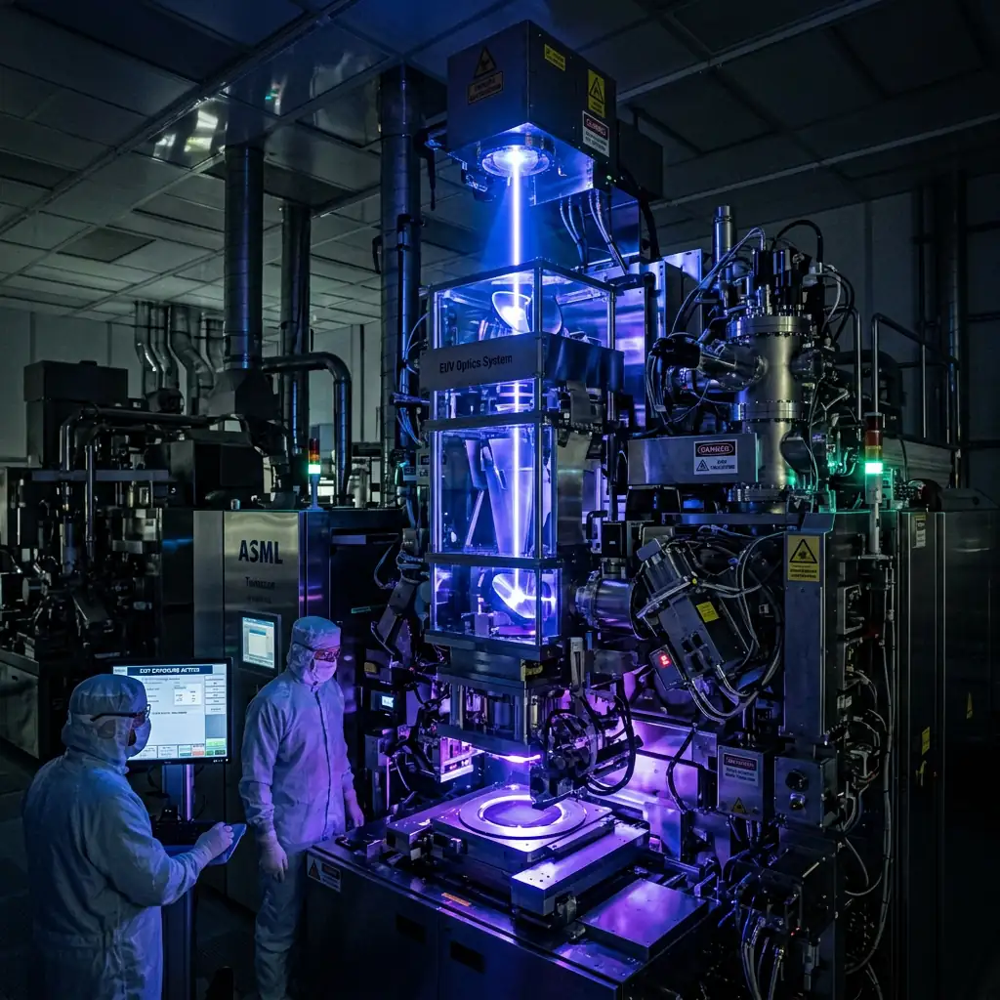
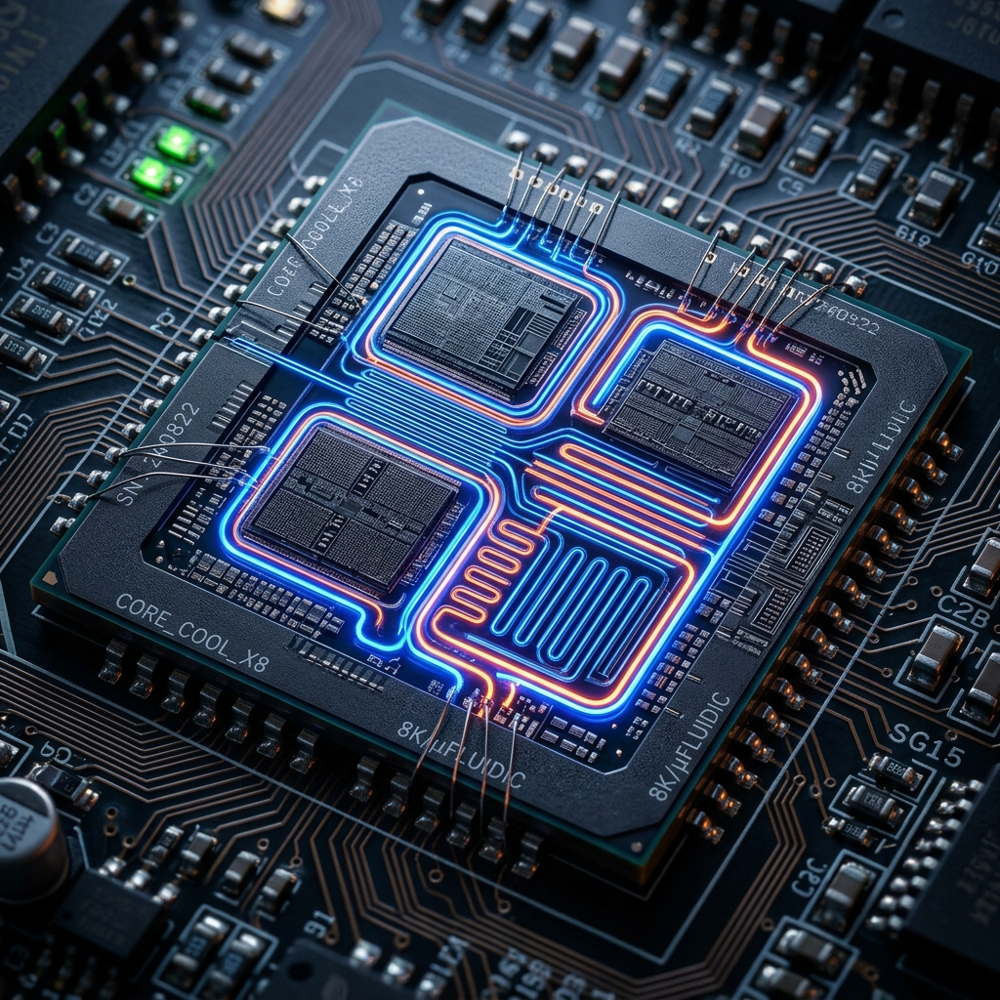
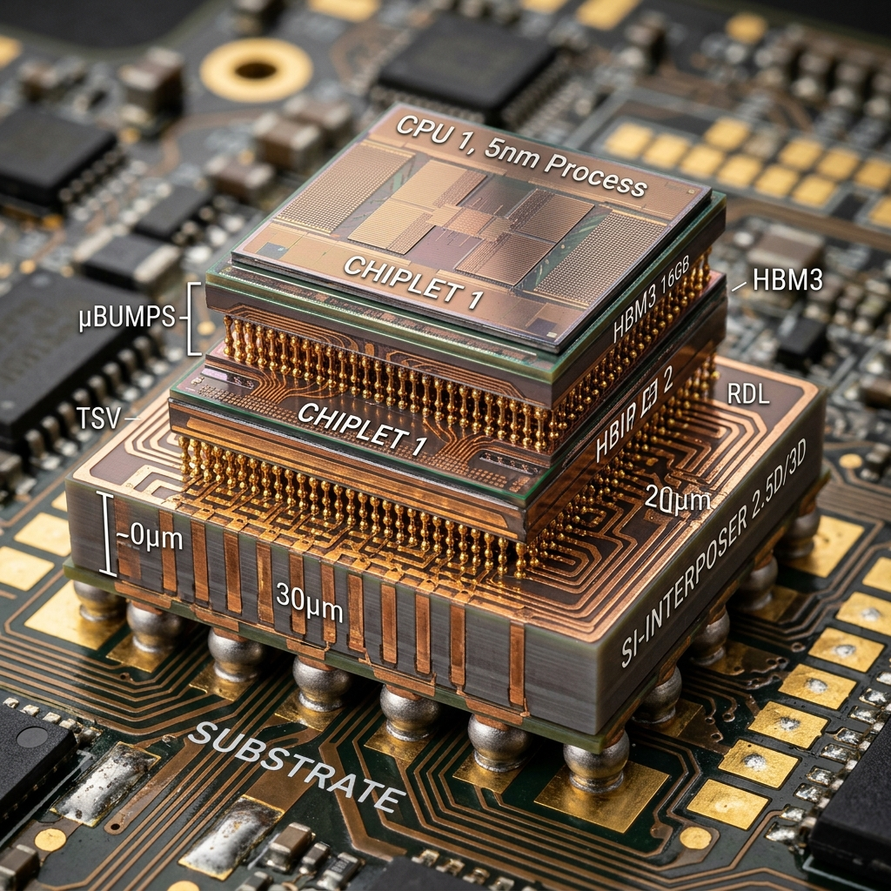
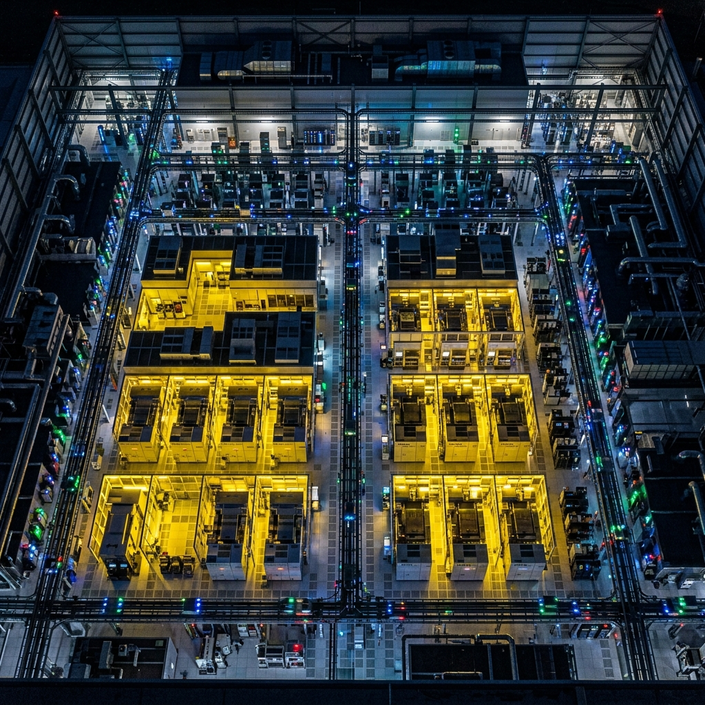
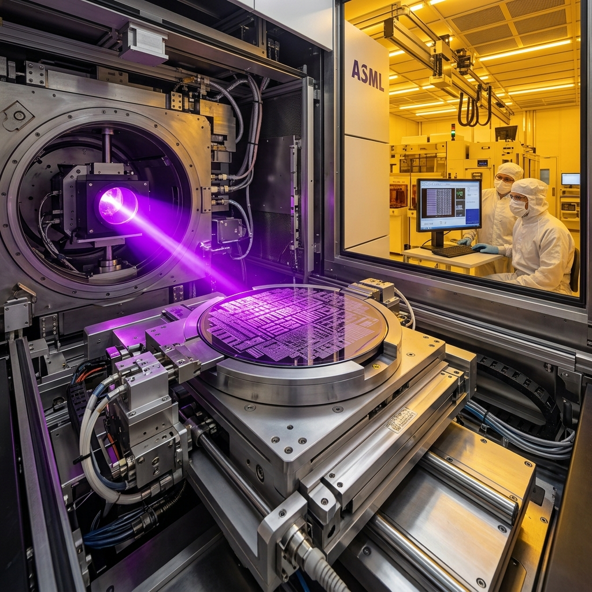
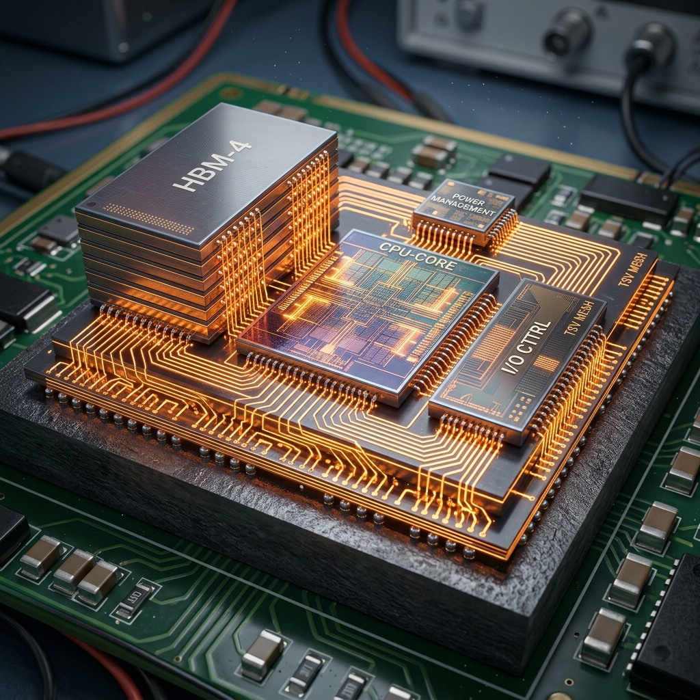
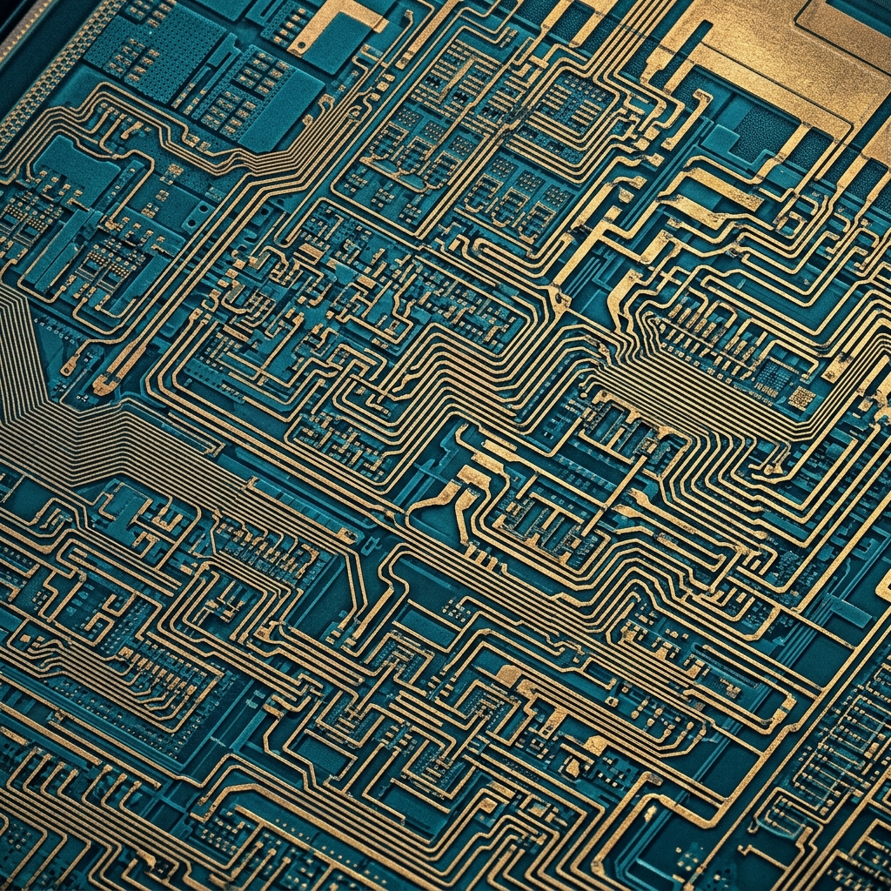
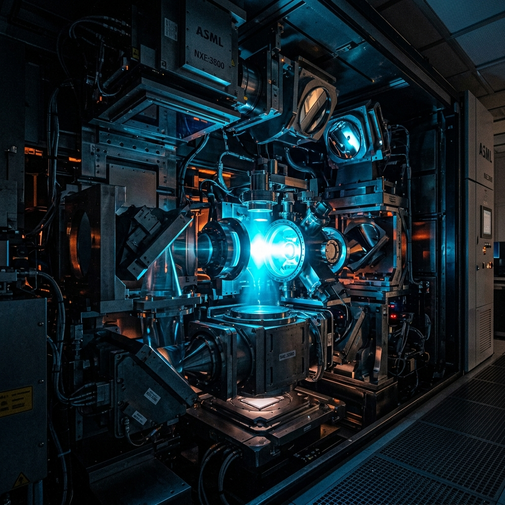

STACKLY
LOADING TECH JOURNAL...
0%
LOADING TECH JOURNAL...

Extending Mo/Si reflective photomask durability under high 600W EUV laser powers with CNT coatings.

Embedding microfluidic cooling channels directly inside sub-micron silicon interposers for 1000W GPUs.

Applying real-time neural computer vision for sub-nanometer wafer defect classification at 60 FPS.

High-density die-to-die communication using standard UCIe protocols for multi-tenant AI accelerators.

How Stackly is scaling zero-emission semiconductor manufacturing with ultra-pure closed-loop water recycling.
Transition metal dichalcogenides (MoS₂/WS₂) as sub-nanometer channel materials for 0.7nm logic.

How machine learning models predict and prevent wafer defect clustering before chemical mechanical planarization.

Single-exposure sub-2nm patterning using anamorphic magnification optics and high-resist sensitivity.

Cleanroom active vibration cancellation (VC-G specs) and seismic isolation engineering for EUV scanners.

Achieving 4um pitch vertical interconnects for true 3D stacked logic-on-logic architectures.
Cryogenic and high-temperature stress testing methodology for automotive-grade N2 microchips.

Overcoming minimum operating voltage (Vmin) scaling walls in 0.018um² 6T SRAM memory arrays.
Watch recorded presentations from senior foundry architects on EUV optics, 3D packaging, and PDK updates.

45 minPresented by Dr. Aris Thorne at the International Lithography Forum 2026.
Step-by-step EDA layout guidelines for multi-die heterogeneous packaging.
Hands-on tutorial on Calibre DRC decks, LVS netlist matching & PEX extraction.
Get monthly technical whitepapers, PDK release notes & EUV lithography benchmarks delivered directly to your engineering team.